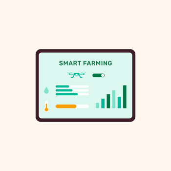

Stop guessing and start growing. Turn your everyday transactions into valuable insights to reduce waste and increase profits.
Log every purchase and sale via mobile or desktop instantly.
Automatically calculate profit per crop and identify seasonal trends.
Get notified when costs are too high or a crop is performing well.
View clear, actionable charts and summaries of your farm’s health at a glance. No math degree required.

Financial blind spots and unpredictable cash flow often hurt small-scale growers.
GreenSense provides affordable, simple tools designed specifically for local farmers.
Join the future of small-scale farming today.